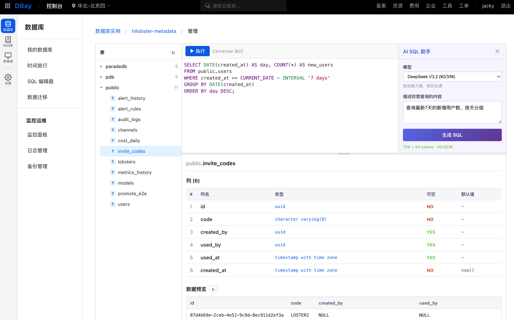

此报告仅限授权人员查看，请输入访问密码
AI 辅助开发效率与成本分析
2026-03-23
Section 01
| 指标 | 数据 | 来源 |
|---|---|---|
| 开发周期 | 20 天 (0.9 人月) | git log |
| 生产代码 | ~71,500 行 | wc -l 统计 |
| 效率 | ~78,500 行/人月 | 代码行/人月 |
| 公司基线 | 500 - 1,000 行/人月 | 公司标准 |
| 效率提升 | ~79x ~ 157x | 效率/基线 |
| AI 成本 | $100/月 (Max 订阅) | 订阅价格 |
| 等效 API 按量费用 | ~$10,000 | 估算 |
| 订阅 ROI | ~100x | 估算 |
* 代码行数为 wc -l 精确统计；效率倍数仅供量级参考，代码行数不等于工作量。AI 相关数据（token、API 调用数）为估算值，Claude Max 订阅不提供按项目用量统计。
Section 02
构建支撑 Agent 的 Serverless 数据底座，以 Neon 为内核的 Lakebase 为知识库、记忆库、AI 多模数据湖提供统一支撑。
DBay 数据港湾 = 4 大模块 + MCP 协议接入

DBay Console - SQL 编辑器与 AI 助手
已部署到华为云 CCE 验证环境
Section 03
Design Spec → Plan → Code
确认设计后再编码，减少返工
3-4 个 AI 窗口 + git worktree 隔离
并行推进多个 Stage
AI 自己写测试 → 跑 → 修 → 通过
形成自动化质量闭环
部署、前端风格、SRE 模板、云操作
封装为可复用 AI 技能
核心理念：你有产品愿景，AI 帮你拆解成可执行的阶段化计划。人负责"做什么"和"为什么"，AI 负责"怎么做"和"分几步"。
关键：路线图不是一次定好的，是随着项目推进、技术验证、需求变化不断调整的。
核心理念：AI 写代码很快但容易偏离方向，前期 review 文档比后期修代码成本低 10 倍。
设计文档 (30min) → 实现计划 (30min) → 编码 (7h) → 一次性通过，无返工
1 天完成 4 个特性：文档标签、查询重写、重排序、表知识库
没有仔细审查设计就开始编码 → AI 方案用独立 kb-write Pod 写入 → 触发 Neon WAL 冲突 → 反复调试浪费大量时间
教训：如果在设计阶段就讨论"多个 Pod 同时写入 Neon 会怎样"，30 分钟就能发现并修正。
Fix 提交占 27% (124/466)，很多是设计不清晰导致的返工。严格 review 设计可降到 15% 以下。
核心理念：AI 可以同时处理多个任务，人的瓶颈是注意力切换。
| 窗口 | 用途 | 示例 |
|---|---|---|
| A | 主特性开发 | Lakeon Stage 16 数据湖 |
| B | 同项目另一特性 (worktree) | Stage 15c 切片管理 |
| C | 另一个项目 | MemOS 记忆库集成 |
| D | 调试/部署/运维 | CCE 环境问题排查 |
理论上 4 个窗口 = 4x 效率，实际 ≈ 2-3x（有等待和协调成本），但比单窗口快得多。
核心理念：让 AI 能自己验证自己的工作，形成自动化调试循环。
传统：AI 写代码 → 人手动测试 → 发现问题 → 告诉 AI → AI 修 → 人再测试
CLI 驱动：AI 写代码 → AI 写测试 → AI 跑测试 → 失败 → AI 读错误 → AI 自己修 → 再跑 → 通过
关键差异：人从测试执行者变成验收者，AI 完成了整个调试循环。
测试数据库创建后立即连接失败 → AI 自动判断 compute pod 未就绪 → 添加等待逻辑 → 重新跑测试通过。耗时 3 分钟（人工至少 15 分钟）。
核心理念：把踩坑经验固化为 AI 的行为规范，团队可共享复用。
| Skill | 用途 | 价值 |
|---|---|---|
| huawei-cloud-style | 华为云 UI 风格 | 参考真实截图提取规范，AI 生成一致风格前端 |
| sre-console | SRE 运维模板 | 标准化运维页面结构 |
| hcloud | 华为云 CLI | 封装 CLI 用法，避免 REST API 出错 |
| deploy | 部署前预检 | 防止凭据丢失、tag 错误等历史事故 |
| weekly-report | 周报生成 | 自动化格式化周报 |
手动部署出过多次事故（RDS 配置丢失、Helm 冲突、忘记测试），把所有事故总结成检查清单写成 Skill。AI 部署前自动调用：检查环境变量、强制跑测试、确认 tag、禁止手动 kubectl。部署事故从频繁发生降到 0。
核心理念：AI 不只是写代码的工具，也是改进工作流程的顾问。
这是一种"元认知"能力 — AI 帮你反思自己的工作方式，而不只是执行任务。
核心理念：方案设计完成后，让 AI 扮演蓝军挑战方案假设，红军用数据回应，多轮攻防后收敛到更健壮的方案。
设计文档完成 → 调用 /challenge Skill → 蓝军从可行性、性能、安全、运维等角度挑战 → 红军逐一回应并补充论据 → 多轮后形成最终方案
关键：对抗的目的不是否定方案，而是让方案在"纸上"经历实战考验，把踩坑从生产环境前移到设计阶段。
以下 Skill 已在实际开发中验证有效，可通过 Claude Code 插件市场安装。
| Skill | 用途 | 来源 |
|---|---|---|
hcloud | 华为云 CLI 操作封装，避免直接调 REST API 出错 | jackylk/claude-plugins |
huawei-cloud-style | 华为云 UI 风格规范，AI 生成一致风格前端 | jackylk/claude-plugins |
sre-console | SRE 运维控制台模板，标准化运维页面结构 | jackylk/claude-plugins |
deploy | 部署前预检，防止凭据丢失、tag 错误等历史事故 | 项目自建 (.claude/skills) |
challenge | 红蓝对抗，方案开发前的结构化攻防审查 | zhuqingxun/zqxbase |
Claude Code 支持通过插件市场（Marketplace）安装第三方 Skill：
在 Claude Code 中执行 /install，搜索并安装对应插件包：
安装后在 ~/.claude/settings.json 的 enabledPlugins 中确认已启用：
"sre-console@jackylk-hcloud": true, "challenge@zqxbase": true
项目级 Skill 不通过插件市场安装，而是直接放在项目的 .claude/skills/ 目录或写入 CLAUDE.md，随代码仓库分发，团队成员 clone 即可使用。
Section 04
快不等于对
开发-部署循环快，线上调试多
| 类别 | 案例 | 教训 |
|---|---|---|
| 云服务兼容性 | pg_search BM25 与 Neon SMGR 不兼容 → PANIC crash | AI 不知道底层存储引擎细节 |
| 网络拓扑 | CCE overlay 不通 RDS（需 hostNetwork） | AI 看不到 VPC 配置和路由表 |
| 跨境限制 | ISP 拦截 Railway→中国 IP 的 POST 请求 | AI 不知道中国网络政策 |
| 容器运行时 | CCE Autopilot setrlimit(CORE, INFINITY) 失败 | AI 不知道容器安全策略 |
| 错误类型 | 典型案例 | 预防 |
|---|---|---|
| API 大小写不一致 | 后端返回 RUNNING，前端期望 running | 设计文档明确约定 |
| 环境变量为空不报错 | helm upgrade 用 $RDS_PRIVATE_IP 为空 → 配置丢失 | 部署脚本校验 |
| 测试 mock ≠ 真实行为 | 单元测试 mock 通过，E2E 失败 | E2E 测试兜底 |
| 忘记废弃旧字段 | 加新字段忘删旧字段 → 数据不一致 | 标注 breaking changes |
| 错误 | 后果 | 正确做法 |
|---|---|---|
| 没 review 设计就让 AI 编码 | KB Pipeline 返工，浪费大量时间 | 花 30 分钟 review 设计文档 |
| 手动 helm upgrade | RDS 配置丢失，API CrashLoopBackOff | 永远用 deploy.sh 脚本部署 |
| 长会话里混太多任务 | Context 污染，AI 输出变差 | 一个会话一个主题 |
| 跳过 E2E 测试直接部署 | 线上 bug | E2E 测试强制门禁 |
Section 05
原型验证了功能可行性，产品化需要公司产品化团队落入正式产品，满足各项规范
当前只有 Superpowers + 项目级 Skill + Memory 系统，要让 AI 开发产出的代码达到产品上线标准，还需要建立以下规范：
谁来 review AI 写的代码？用什么标准？
需要明确 AI 代码与人工代码的 review 流程差异。
AI 是否引入了安全漏洞？如何检测？
需要建立 AI 代码的安全扫描和审计机制。
AI 写的代码别人能看懂吗？注释够吗？
需要可维护性标准和文档化要求。
AI 写的代码性能如何？有没有明显的性能问题？
需要建立性能测试基准和回归机制。
故障转移、数据恢复是否可靠？
AI 开发的系统需要经过完整的容灾演练。
如何把 AI 开发流程集成到现有 CI/CD？
需要将 AI 质量门禁纳入流水线。
Section 06
优先赋能资深工程师 / 架构师
Section 07
从"人写代码"到"人驾驭 AI 写代码"——组织结构必须跟着变
兼具产品思维和技术架构能力。定义做什么、怎么做、技术选型。
前后端通吃，与 AI Agent 结对编程。不再需要前后端分离的人力配置。
AI 产出代码量暴增，质量门禁比以往更关键。负责审计、安全扫描、规范制定。
维护 CI/CD、基础设施、监控告警。可多团队共享，小团队可由全栈工程师兼任。
广度 + 一个深度。AI 消除了技能壁垒，"只会前端"或"只会后端"不再成立。每个人都应该能端到端交付。
AI 产出代码的速度远超人类，瓶颈从"写代码"转移到"判断代码好不好"。审查能力是核心竞争力。
个人的 AI 使用经验通过 Skill/Prompt 沉淀为团队可复用资产。一个人摸索出的最佳实践，全团队即刻受益。
| 维度 | 传统 10 人团队 | AI-Native 4 人团队 |
|---|---|---|
| 月产出（代码行） | 5,000 - 10,000 | 70,000+ |
| 沟通成本 | 日均 2-3h 会议 | 极低，站会 15min |
| 需求响应速度 | Sprint 粒度（2 周） | 天级别 |
| 人力成本（月） | 约 ¥300K-500K | 约 ¥120K-200K + AI ¥4K |
| 知识传递 | 口口相传 + 文档 | Skill/Memory 自动沉淀 |
| 关键人风险 | 高（知识在人脑） | 低（知识在 Skill + Memory） |
选 1 个新项目或独立模块，配置 1 架构师 + 1 全栈，全量使用 AI 工具。验证效率数据。
建立 AI 代码审查标准、安全扫描流程、Skill 库。质量工程师角色就位。
基于试点数据，调整团队编制。传统角色向 T 型转型，专职测试/前端/后端逐步合并。
多产品线推广 AI-Native 团队模型。Skill 跨团队共享，平台工程师统一支撑多个产品团队。